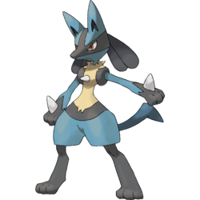

INTJ – The Mastermind

You’re a Lucario!
Personality Overview: INTJs are strategic, focused, and future-oriented. You excel at seeing patterns, predicting outcomes, and creating efficient plans to reach your goals. People admire your confidence and competence, even if you sometimes seem reserved or mysterious.
Strengths
- Strategic and long-term thinker
- Independent and self-disciplined
- Confident decision-maker who values efficiency
Challenges
- May come across as overly critical or blunt
- Can be perfectionistic and impatient with inefficiency
- Sometimes struggles to express emotions openly
Why Lucario?
Lucario is precise, disciplined, and deeply intuitive, using its aura to read situations—a perfect reflection of your ability to see beyond the obvious and plan ahead. Like Lucario, you have a strong sense of justice and focus on mastery.
Personality Deep Dive
Your dominant trait is Introverted Intuition (Ni), giving you an uncanny ability to anticipate future outcomes. Your secondary trait, Extraverted Thinking (Te), allows you to organize people and resources efficiently. You’re a visionary strategist who thrives on turning big ideas into reality.
Pokémon Compatibility
You thrive with goal-oriented and supportive types, but overly spontaneous or overly emotional personalities can feel frustrating for you.
✅ Best Matches
- ENTJ – Charizard: Shares your ambition and drive, creating a powerhouse strategic team.
- INFJ – Gardevoir: Insightful and values-driven, they balance your logic with empathy.
- INTP – Alakazam: Analytical and curious, they challenge your mind in all the right ways.
üî∏ Good Potential
- ISTJ – Snorlax: Reliable and consistent, they respect your structure and focus.
- ISFJ – Vaporeon: Caring and supportive, they help you stay connected emotionally.
- ENFJ – Pikachu: Warm and motivating, though they may sometimes push you socially more than you prefer.
⚠️ Tough Matches
- ENFP – Eevee: Too spontaneous and changeable for your structured plans.
- ESFP – Jigglypuff: Fun but unpredictable, which can feel distracting to you.
- ESTP – Arcanine: Their impulsiveness clashes with your careful, calculated approach.
Retake the Quiz